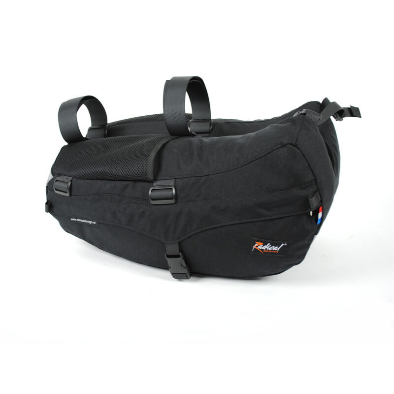

DWG · BANANA RACER01 / 07
Radical Design
Banana Racer
The Banana Racer recumbent panniers are our only side panniers that don't need a rack, they are fully suspended from the seat.
€209.95In stock · ships from the workshop
- The strongest choice
- Worldwide shipping
- Dutch design
- Handmade in the Netherlands
◆ Pickup in Gasselternijveen? Order by bank transfer, note it in the comments, and we remove shipping and send a payment link. 14-day right of withdrawal applies to online orders.
DESCRIPTION
About this product
The Banana Racer recumbent panniers are our only side panniers that don't need a rack, they are fully suspended from the seat. A solution for recumbents that can't take rack bags or seat bags. With foam reinforcement and mesh pockets. One Banana Racer consists of a left and a right pannier, connected by adjustable straps. Banana Racer panniers fit both hard shell and mesh seats.
Which bag fits my machine?
Available in 5 colours
DATA / SPEC SHEET